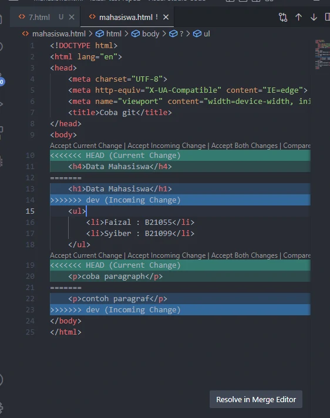

Git Merge Conflict
- Membuat branch baru
- edit file mahasiswa.html
- commit add dan modified
-
kita ubah ke branch master dan mengubah file
mahasiswa.html
kita merge maka akan ada conflict

- kita git status
-
kita simpan dulu yang sudah dimodifikasi kedalam staging
- kita hapus branch dev
kita akan checkout ke sebuah commit
- kita git log
- kita pilh dan ambil 7 dari commit nya
- untuk keluar dari log ketik q
-
kita akan ada di keadaan detached HEAD : poin
head nya lepas dari branch
kembali ke commit dari mengulang lagi
- kembali ke branch master
- kembali ke commit tadi
- buat branch baru di commit
- kita arahkan HEAD nya ke test